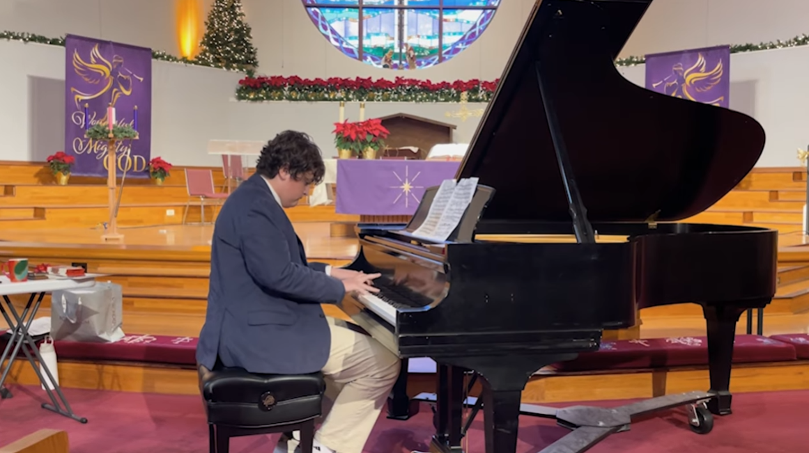
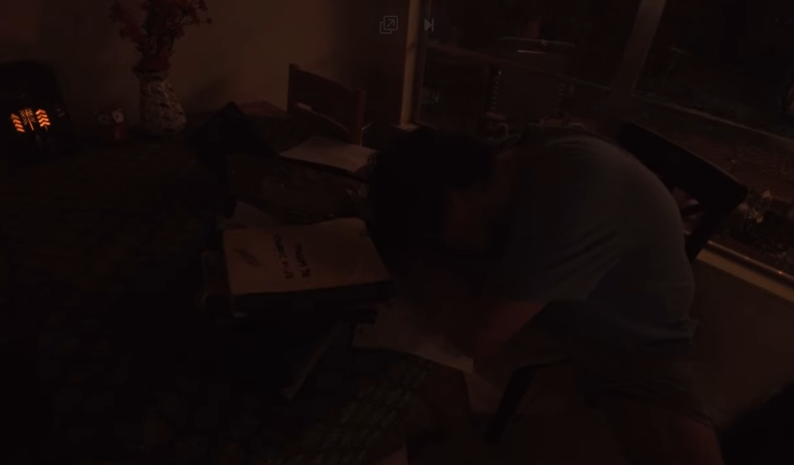
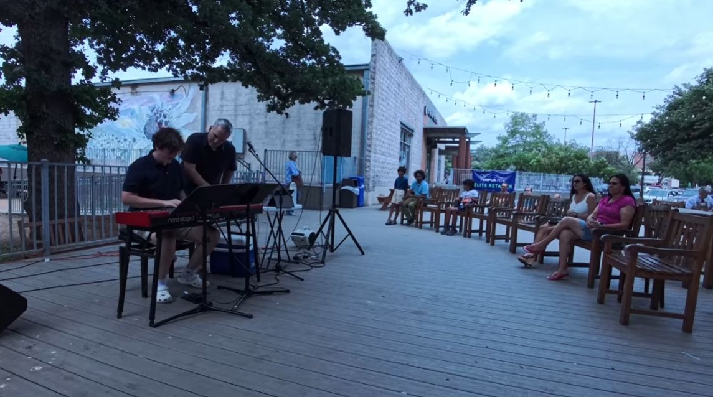
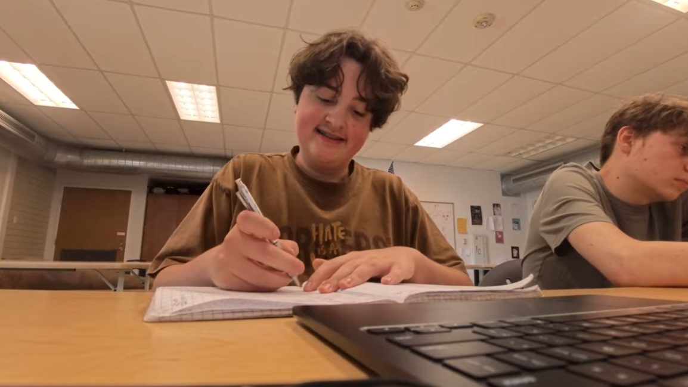
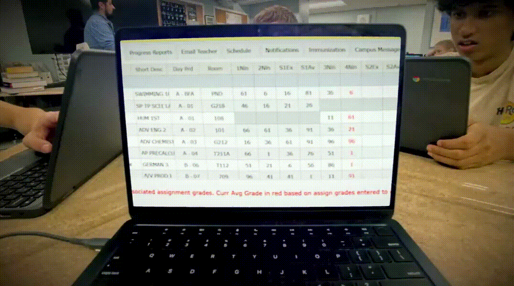

The Film
Perfectly Alone is about my personal story of being addicted to perfection to fit in after getting into LASA. I spent the summer before freshman year hearing from my brother and his friends that everyone there was trying to be perfect, and that I might not fit in. So I decided I would be perfect. Late nights studying, staying up later and later. Grade obsession. Piano practice not because I loved it but because getting it right felt like a way to prove something. I started hating piano and class.
The film follows that arc. Staying up until midnight studying. Entering piano recitals not with excitement but with dread about making mistakes. And then a friend who needed help with math. He would ask for my answers, but when I asked to hang out, he had plans. I felt like an answer key in the teacher's drawer. Inanimate. A tool. I realized that being focused on perfection achieved the opposite of what I wanted.
The turning point is a piano recital where I made mistake after mistake playing the Turkish March. Yet I smiled through all of it. It was my worst performance, but truly my best one, because I felt connected to the audience, to my piano teacher, to myself, in a way I never had when everything went right. Embracing imperfection, I regained a passion for piano. I started to enjoy schoolwork again. I gained stronger friendships, and paradoxically, not seeking perfection brought me to make higher-quality work because I enjoyed it now.
"I couldn't have fit in any better." The phrase repeats every time I betray myself in the film by striving for a facade of perfection, until the irony becomes impossible to miss.

practicing to perform, not to play
later and later into the night
smiling through the mistakes "can you send me the answers later?"
"can you send me the answers later?"

after the transformation, enjoying schoolworkCraft Choices
I tried to create emotional contrast throughout the film. Early in the film, when I'm being "perfect," I'm almost never smiling unless someone else is watching, like when my friend looked at my grades. Late in the film, when things go terrible at the recital, I'm grinning time after time.
The phrase "I couldn't have fit in better" repeats throughout the film, always at moments where fitting in actually meant betraying myself and my happiness. It starts feeling like an achievement until it obviously deteriorates into a blatant lie.
The language in the voiceover uses dehumanizing words on purpose throughout the film, like: "The Answer Key in the teacher's drawer." As if I were an object that exists to serve a function. That diction helps encapsulate what perfectionism does to relationships when your "perfection" is the only thing people value in you.

every number a judgmentWhat I Learned
The film is 8 minutes long and made individually. Just me and a camera on a tripod. So for some shots, I had to get creative: the opening is me pushing a camera taped on a swivel microphone stand with my off-camera hand. The zoom-out after the convo with my brother was me pulling a cart with the camera attached after I left the frame.